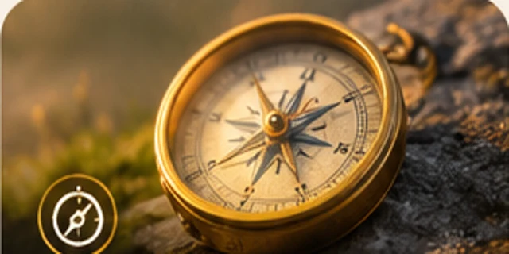
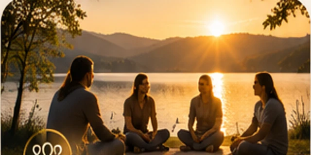
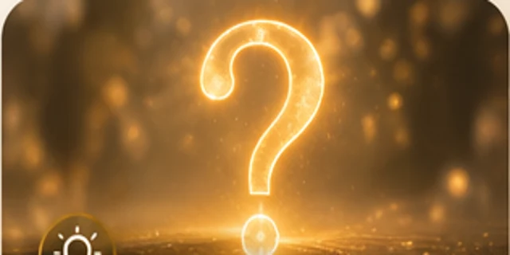

WILLKOMMEN IN DEINER ICS-WELT
Ein Tor. Viele Möglichkeiten.
Manchmal beginnt Veränderung mit einem einzigen Schritt.
Ohne Anmeldung · In deinem Tempo
DEIN WEG BEGINNT HIER
Entdecke deine ICS-Welt
Wähle das Bild, das dich gerade anspricht.
Raus aus alten Mustern
Erkennen, verstehen und den nächsten Schritt finden.
Produktseite in Vorbereitung →
Deine Kompasse
Werte, Klarheit und neue Perspektiven entdecken.
Werte-Kompass öffnen →Body Code
Körperwahrnehmung, Ruhe und bewusste Berührung.
Direktlink folgt →
Begegnungen
Echte Gespräche, Verbindung und Gemeinschaft.
Direktlink folgt →ICS Akademie
Wissen, Methoden und praktische Impulse.
Direktlink folgt →
Entdecken & Erleben
Interaktive Fragen und neue Sichtweisen.
Codefinder öffnen →Gestaltungsentwurf: Die Bildmotive stammen aus dem bisherigen Portalentwurf. Die Originalbilder und die noch fehlenden direkten Zielseiten werden vor der Veröffentlichung abgeglichen.